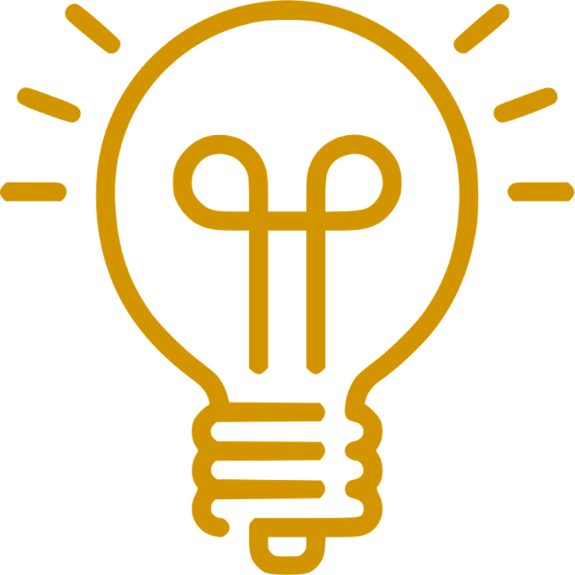

Bénéficiez de notre expertise en regroupement de crédits, c'est sans engagement !
Le regroupement de crédits, c'est quoi ?
Le regroupement de crédits est également appelé rachat de crédits ou consolidation de dettes ou restructuration de dettes.
Cette solution, comme son nom l’indique, consiste à regrouper l’ensemble de vos crédits en cours en un seul prêt avec une mensualité unique plus faible.
Il peut inclure ou non une garantie hypothécaire.


Toutes nos solutions de regroupement de crédits à BOULOGNE SUR MER ne demandent pas de changement de banque.
Vous gardez votre compte dans votre banque actuelle, et le prêt sera prélevé tous les mois.
Nous nous occupons de toutes les démarches administratives.
Anticipez les moments difficiles pour repartir du bon prêt
Le regroupement de crédits, pour qui ?
Un rachat de crédits S'ADAPTE A TOUS LES PROFILS
(propriétaire ou locataire ; célibataire ou marié ; en CDI ou à la retraite)
et ne concerne pas uniquement les personnes en situation de surendettement
NATIONAL FINANCE, spécialiste en rachat de crédits, peut vous aider et vous proposer des solutions financières adaptées à votre situation pour remettre votre budget d’aplomb et y associer le financement d'un nouveau projet.
Il n’y a pas d’âge pour avoir des projets !
Une retraite à l’horizon, l’arrivée d’un enfant, le financement des travaux, une baisse des revenus ou encore une accumulation excessive de crédits.
Chaque situation et chaque histoire sont uniques.
N’attendez pas qu’il soit trop tard pour diminuer vos mensualités
Le regroupement de crédits, pour quoi faire ?
Un rachat de prêts peut être utilisé pour :
- Améliorer une situation financière aggravée
- Alléger vos mensualités de crédits et retrouver une capacité d’épargne
- Une diminution des taux
- Financer un nouveau projet (voiture, travaux, acquisition immobilière…)
- Obtenir une trésorerie de précaution pour réaliser un investissement…

RACHAT DE CREDITS
LA solution pour regrouper tous vos crédits et financer un nouveau projet !

Dans le cadre d'un regroupement de crédits, vous pouvez intégrer des prêts de natures différentes :
crédit immobilier, crédit consommation, prêt personnel, dette familiale, trésorerie et découvert bancaire.
Cependant, vous n'êtes pas obligé de faire racheter l'ensemble de vos crédits.
Vous pouvez par exemple exclure votre prêt immobilier et éviter de garantir votre bien en hypothèque.